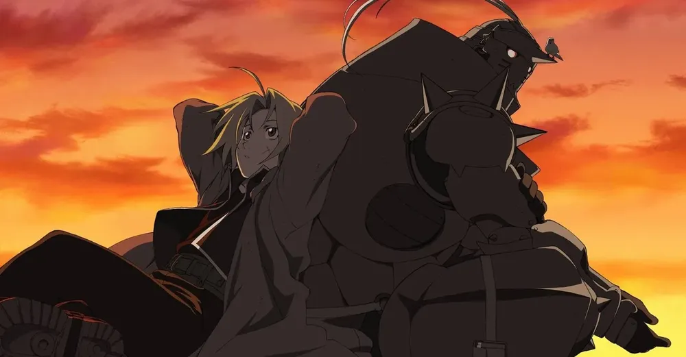

- Sword Art Online
-
Sword Art Online é um anime que mistura fantasia, jogos e romance, baseado na série de light novels escrita por Reki Kawahara. A história se passa em um futuro próximo, onde os jogadores mergulham em um mundo de realidade virtual chamado "Sword Art Online" usando um dispositivo de realidade virtual chamado NerveGear. No entanto, eles descobrem que estão presos dentro do jogo pelo criador, Akihiko Kayaba, e a única maneira de escapar é alcançar o centésimo andar da torre do jogo e derrotar o chefe final.
- Chainsaw Man
-
Baseado no mangá escrito e ilustrado por Tatsuki Fujimoto, a história segue Denji, um jovem que ganha a vida caçando demônios usando seu fiel cão-demônio, Pochita, que se transforma em uma serra elétrica quando necessário. Denji sonha em viver uma vida confortável e pagar suas dívidas, mas tudo muda quando ele é traído por quem ele confiava e se funde com Pochita, tornando-se o híbrido conhecido como Chainsaw Man, um humano com coração de demônio. O elenco de dubladores originais é composto por Tomori Kusunoki, Ai Fairouz, Kikunosuke Toya, Shougo Sakata, e mais.Sucesso de audiência, a obra obteve nota 8.4 no IMDb e 8.52, de aprovação da audiência no My Anime List. Chainsaw Man está disponível para assistir no streaming Crunchyroll.
- Hunter x Hunter
-
Criado por Yoshihiro Togashi (Yu Yu Hakusho), o anime que estreou em 2011 é um remake do original de 1999. A trama segue a trajetória de Gon Freecss, um jovem determinado a se tornar um Hunter, uma elite que realiza diversas tarefas perigosas, desde a captura de criminosos até a busca por tesouros raros e a exploração de terras desconhecidas. Ao descobrir que o pai, um renomado caçador, pode estar vivo, ele parte na esperança de encontrá-lo. Durante sua jornada, ele faz amizade com outros aspirantes, como Killua Zoldyck, Leorio Paradinight e Kurapika. O elenco de dubladores japoneses é estrelado por Megumi Han, Mariya Ise, Miyuki Sawashiro, Keiji Fujiwara, e mais.
- Hajime no Ippo
-
Hajime no Ippo ou "Espírito de Lutador", como é conhecido em português, é uma animação japonesa que mistura ação e comédia. A história acompanha a vida de Ippo Makunouchi, um adolescente que ajuda a mãe a administrar os negócios da família que sonha em ser lutador após ser salvo de uma briga de rua por um boxeador profissional. Vitória, derrota e um ciclo de treinamento dedicado aguardam Ippo em sua jornada para alcançar a grandeza. Com seu corpo resistente e espírito de luta imparável, o jovem gentil busca conquistar o mundo.
- Yu Yu Hakusho
- Yu Yu Hakusho é um anime que mistura ação, comédia e sobrenatural, baseado no mangá de mesmo título escrito e ilustrado por Yoshihiro Togashi. A obra acompanha a vida de Yusuke Urameshi, um jovem rejeitado e problemático, que acaba sacrificando a própria vida para salvar uma criança. Devido à natureza heróica de sua morte, o mestre do submundo dá a ele a oportunidade de voltar à vida como um detetive espiritual. O elenco de dubladores da série conta com nomes como Nozomu Sasaki, Justin Cook, Christopher Sabat, Cynthia Cranz, e outros
- Neon Genesis Evangelio
-
O anime é um drama psicológico que explora questões profundas sobre identidade, solidão e os efeitos do trauma. A série estreou originalmente no Japão em 1995 e conta com a assinatura do diretor e criador Hideaki Anno (Shin Ultraman). Neon Genesis Evangelion se passa em um mundo futurista após um evento catastrófico chamado "Segundo Impacto", que causou devastação global. A história acompanha o adolescente Shinji Ikari, que é recrutado por seu pai, Gendo Ikari, para pilotar um gigante robô chamado Evangelion e defender a cidade de Tóquio de criaturas misteriosas conhecidas como Anjos
- Death Note
-
Death Note é um anime thriller investigativo, escrito por Tsugumi Ohba e ilustrado por Takeshi Obata, serializado originalmente de 2003 a 2006. A trama segue a história de Light Yagami, um estudante do ensino médio extremamente talentoso que encontra um misterioso caderno chamado Death Note. Ele descobre que, ao escrever o nome de uma pessoa no caderno, pode causar sua morte. Com o desejo de criar um mundo utópico livre de criminosos, Light começa a usar o caderno e adota o nome de Kira. Porém, sua missão não passa despercebida. L, um detetive brilhante e enigmático, é convocado para capturar Kira e colocá-lo sob julgamento. Iniciando um jogo de gato e rato intenso entre Light e L.
- Cowboy Bebop
-
O anime de ficção do Studio Sunrise se passa no ano de 2071, quando a humanidade expandiu-se por toda a galáxia. Estas novas sociedades são atormentadas por assassinatos, uso de drogas e roubos, e os bandidos intergalácticos são procurados por caçadores de recompensas, como Spike Spiegel e Jet Black. Spike é assombrado pelo peso de seu passado violento. Enquanto isso, Jet gerencia suas próprias memórias perturbadas enquanto cuida de Spike e do Bebop, seu navio. Durante essa trajetória, Spike terá de escolher entre viver com a sua nova família ou vingar-se das suas antigas feridas.
- Monster
-
Monster é um anime policial misturado com suspense psicológico, criado por Naoki Urasawa. A trama segue a trajetória de Kenzou Tenma, um neurocirurgião de elite que vive na Alemanha e encontra sua vida em completa confusão depois de se envolver com um psicopata que já foi seu paciente no passado. Ele agora entra em uma busca para reparar o caos espalhado pelo criminoso que salvou. O elenco de dubladores japoneses é estrelado por Hidenobu Kiuchi, Mami Koyama, Tsutomu Isobe, Romi Park, entre outros. Sucesso de público, o anime obteve nota 8.7, no IMDb e 8.88 no My Anime List de acordo com a audiência. A produção está disponível para assistir na Netflix.
- FullMetal Alchemist: Brotherhood
-
Inspirado no mangá homônimo escrito e ilustrado por Hiromu Arakawa, o anime conta uma história que se passa em um mundo fictício onde a alquimia é uma forma avançada de ciência. Os protagonistas, os irmãos Edward e Alphonse Elric, buscam a Pedra Filosofal para restaurar seus corpos após uma tentativa de ressuscitar a mãe terminar em desastre, deixando Edward sem um braço e uma perna e Alphonse como uma alma presa em uma armadura. A produção japonesa reúne 64 episódios em uma única temporada e explorar temas como moralidade, ambição e redenção.
- 


-